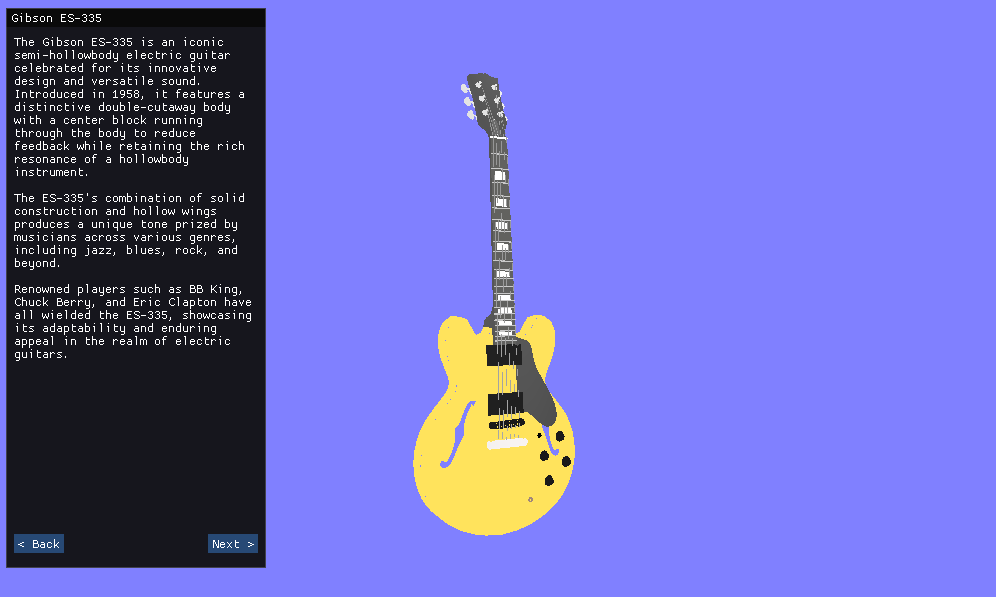
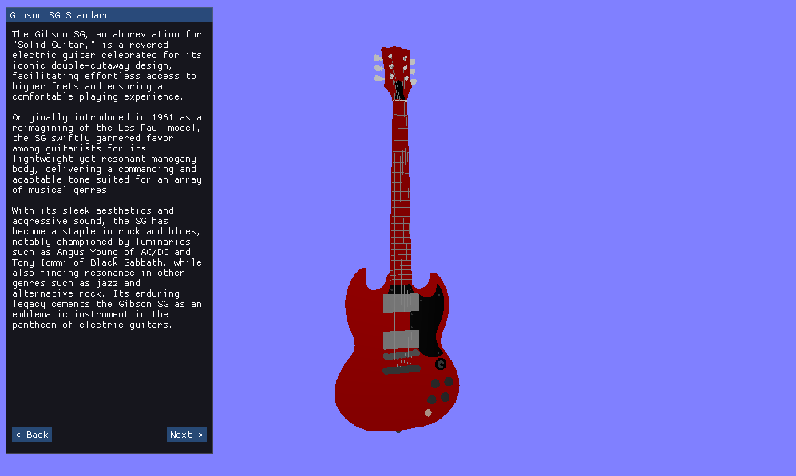
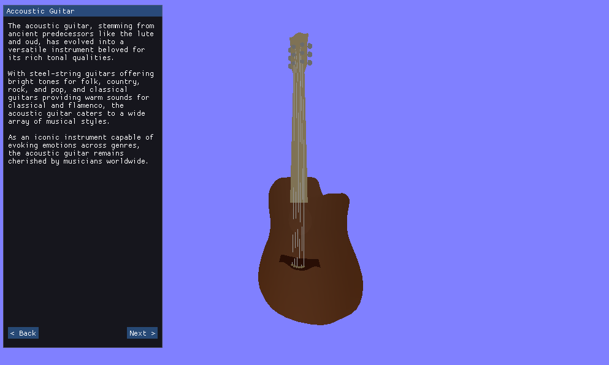
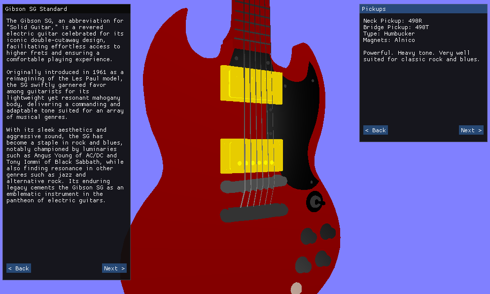
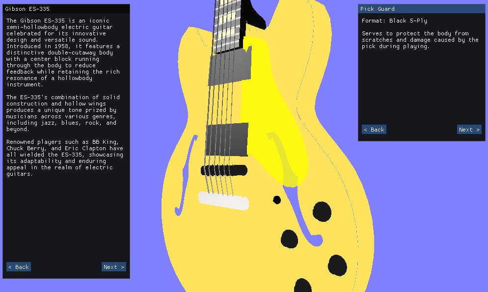
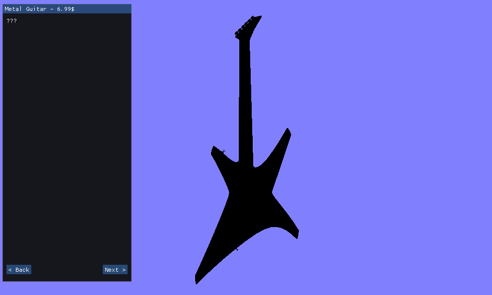

About the Project
The application was made to be an educative program around the main stars of rock music: Guitars. With this showcase, users are able to select guitars among a variety of 3 guitars (+1 easter egg). The left panel of the GUI stays there and gives plenty of details about the guitars to learn significantly about each instrument. The right side of the screen is filled with a window upon selecting a part of the guitar with the mouse.
Each guitar element is clickable, have fun!
Features
- Rendering multiple replicas
- Informative GUI display
- Guitar parts layering
- Clickable guitar parts
Controls
To interact with the guitar rendering, use the following controls:
- Rotate the guitar: Q / E
- Zoom in and out: M
- Scroll while zoomed in: W / S
- Reset view: R
- Select guitar parts: Left mouse click
- Release guitar part: ESC
Demo
Gallery
     Conclusion
In conclusion, this project has been an immersive journey into the realm of OpenGL,
where I embarked on the challenge of rendering three-dimensional representations of guitars.
Throughout the process, I delved deep into various aspects of OpenGL, expanding my knowledge
and skills in 3D transformations, shaders, and the intricacies of interacting with a graphics API.
One of the most rewarding aspects of this endeavor was the opportunity to explore advanced techniques
such as picking, which enabled user interaction with the rendered objects. Implementing picking functionality
not only enhanced the project's interactivity but also provided valuable insights into user experience design
and real-time rendering optimizations.